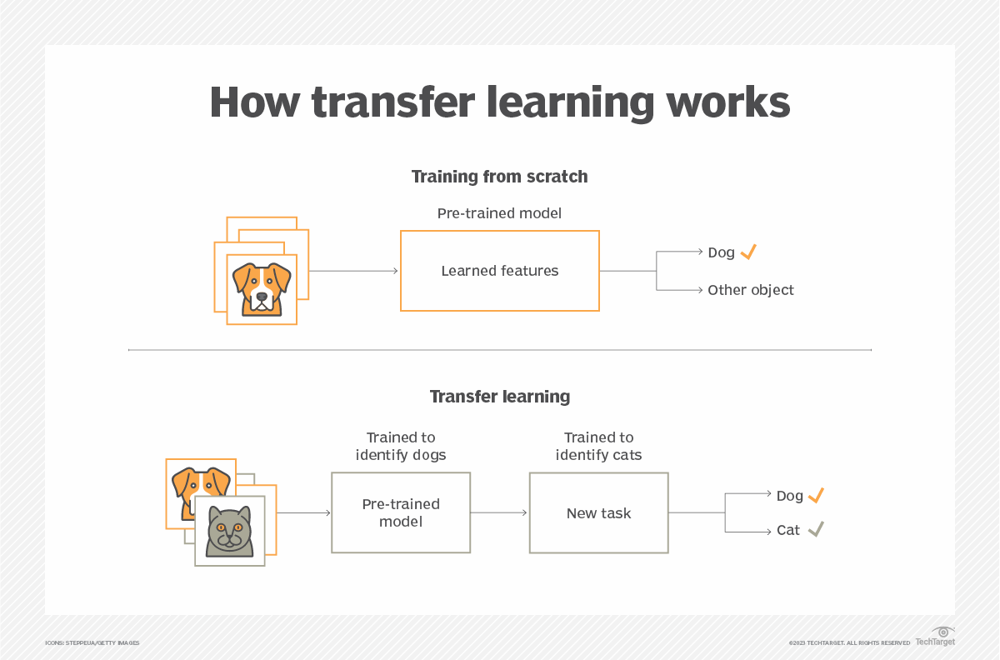

Apprentissage par transfert#
L’apprentissage par transfert est une technique courante en deep learning. Elle consiste à réutiliser les poids d’un réseau préentraîné comme base pour former un nouveau modèle.
Voici ses principaux avantages :
L’entraînement est plus rapide si les tâches sont similaires.
Les performances sont meilleures qu’avec un modèle entraîné de zéro.
On a besoin de moins de données.

Figure extraite de ce article.
Apprentissage par transfert ou ajustement fin ?#
Ces deux termes sont souvent confondus car ils sont très proches. En pratique, l’ajustement fin est une forme d’apprentissage par transfert qui consiste à réentraîner seulement une partie des couches du modèle réutilisé.
Voici les définitions claires :
Apprentissage par transfert : Entraîner un modèle en utilisant les poids d’un modèle préentraîné sur une autre tâche (on peut réentraîner tout le modèle ou seulement certaines couches).
Ajustement fin : Réentraîner certaines couches (souvent les dernières) d’un modèle préentraîné pour l’adapter à une nouvelle tâche.
Quand utiliser l’apprentissage par transfert ou l’ajustement fin ?#
En général, utiliser un modèle préentraîné comme base est toujours bénéfique (sauf si les domaines sont très différents). Je vous conseille de l’utiliser dès que possible.
Cependant, cela impose quelques contraintes :
L’architecture du modèle ne peut plus être modifiée comme on le souhaite (les couches non réentraînées).
Il faut disposer des poids d’un modèle préentraîné (on en trouve beaucoup en ligne, cf cours 6 sur HuggingFace).
Note : Pour la classification d’images, on utilise souvent un modèle préentraîné sur ImageNet car ses 1000 classes rendent le modèle assez généraliste.
Dataset d’entraînement : comment faire ?#
Lors de l’ajustement fin d’un modèle, on peut avoir deux objectifs :
Cas 1 : Entraîner un modèle sur une tâche complètement différente de celle pour laquelle il a été préentraîné (ex. : classifier des dinosaures alors que le modèle est entraîné sur des mammifères). Dans ce cas, le modèle peut “oublier” sa tâche d’origine sans que cela pose problème.
Cas 2 : Entraîner un modèle sur une tâche complémentaire à celle pour laquelle il a été préentraîné (ex. : détecter des oiseaux tout en restant performant sur les mammifères). Dans ce cas, on veut que le modèle reste performant sur la tâche d’origine.
Selon le cas, on n’utilise pas les mêmes données pour l’entraînement. Pour le cas 1, le dataset ne contient que les nouvelles images à classifier (ex. : uniquement des dinosaures). Pour le cas 2, on inclut des données de l’ancien et du nouveau dataset pour que le modèle reste performant sur les anciennes données. En général, on prend 50/50, mais cela peut varier (ex. : moitié mammifères, moitié oiseaux).
Note : Selon ce principe, le vrai open-source signifie qu’on rend accessibles le code, les poids et les données d’entraînement du modèle. Sans ces trois éléments, on ne peut pas ajuster finement le modèle efficacement. C’est particulièrement vrai pour les modèles de langage LLM.
Modèles de base#
Les modèles de base sont entraînés sur de grandes quantités de données (souvent non labelisées) et servent de base pour l’ajustement fin ou l’apprentissage par transfert.
Modèles de base pour le NLP : Pour le NLP, il existe de nombreux modèles de base comme GPT, BLOOM, Llama, Gemini, etc. Ces modèles sont ajustés finement pour diverses tâches. Par exemple, chatGPT est une version ajustée finement de GPT pour les conversations de type chatbot.
Modèles de base pour les images : Pour les images, le terme modèle de base est débattu car ce n’est pas aussi évident que pour le NLP. On peut citer ViT, DINO, CLIP, etc.
Modèles de base pour le son : Pour le son, le modèle CLAP est un exemple de modèle de base.
Comment utiliser l’ajustement fin ?#
L’ajustement fin consiste à réentraîner certaines couches d’un modèle préentraîné pour l’adapter à une nouvelle tâche. Il faut donc choisir le nombre de couches à réentraîner.
Comment choisir ce nombre de couches ? Il n’y a pas de formule fixe. On se base généralement sur notre intuition et sur ces règles :
Moins on a de données, moins on réentraîne de couches (peu de données = seulement la dernière couche ; beaucoup de données = presque toutes les couches).
Plus les tâches sont similaires, moins on réentraîne de couches (ex. : détecter des hamsters en plus des chats, chiens et lapins ; détecter des maladies à partir d’un modèle chat/chien/lapin est très différent).